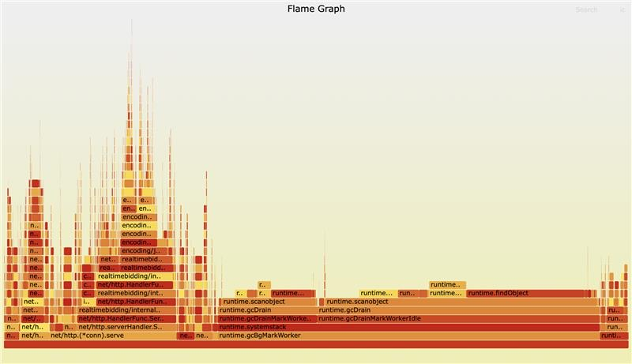

Intro
Hey, I am an engineer
Things I’ve done or used
2025-10-22, Ho Chi Minh city
0a. Things I’m confident in
- Golang (goroutine, channel, mutex, atomic, profiling, continuous profiling)
- C++
0b. Things I’m familiar with
- Rust, python, java, bash
- Redis, mongoDB, kafka, aerospike
- AWS S3/SQS,
- GCP GCS/BigTable/BigQuery/GCS
- K8s, docker, nginx, grafana, prometheus
- HTTP, DNS protocols
- Protobuf, websocket
0c. Things I’ve tried but wouldn’t say I’m familiar with
1. Reverse proxy [work project]
Link: Reverse proxy
2. Weather targeting [work project]
Link: Weather targeting
3. Optimize C++ application performance
Identify and resolve bottleneck in C++ real-time engine, by moving expensive computations from single message passing thread to multiple worker threads.
Result: reduce from 36-core to 16-core for 50 nodes (from 1800 cores to 800 cores)
TODO: will write more about this later
4. Debug C++ segmentation fault coredump with GDB
5. Profiling golang application:
https://go.dev/doc/diagnostics
6. Continuous profiling golang application with pyroscope:
https://grafana.com/docs/pyroscope/latest
7. Uber H3 and Google S2
Uber H3: https://h3geo.org/
Google S2: http://s2geometry.io/
8. Bloom filter
https://en.wikipedia.org/wiki/Bloom_filter
https://github.com/bits-and-blooms/bloom
9. Bitset-based filtering
To match request and with large number of campaigns in real-time
https://github.com/rtbkit/rtbkit/wiki/Filter
10. Geoplot tool [personal project]
A simple tool to visualize CSV files containing latitude and longitude data on a world map.
Link: https://github.com/nttams/geoplot
11. Geodata [personal project]
A simple tool to generate UberH3 cellIDs, latitude, and longitude for all countries in the world.
Link: https://github.com/nttams/geodata
12. Use redis as caching layer for real-time system, apply hit-miss and batching update mechanism
13. Implementing EDNS(RFC6891) support for C++ DNS client
14. Switch from golang std encoding/json to segmentio/encoding/json
Interfaces are almost identical, performance is much better
15. Continuous profiling rust application with pyroscope
16. Use redis_exporter/redisinsight to monitor redis
Real-time weather augmentation for HTTP requests
2025-08-28, Ho Chi Minh city
1. Problem
A HTTP server receives requests globally, for a subset of requests originating from some regions (e.g. US, EU), we must augment the request with weather data (historical, current, or even forecast data)
- Incoming requests contain coordinates (latitude, longitude)
- Weather data is retrieved from a third-party weather API, and it’s slow (typically seconds)
- The HTTP server must respond < 100ms
- Weather augmentation is required only for requests originating from certain regions, not all requests
1.1 Determine if a request needs weather data
Given a latitude and longitude:
- Decide if the request originates from target regions (e.g. US, EU)
- The decision must be fast and deterministic
1.2 Augment the request with weather data in real time
- Weather data comes from a slow external API
- The HTTP request path must remain low latency
- Data freshness should be acceptable (near real-time)
2. Solutions
2.1 Determine if a request needs weather data
2.1.1 Naive approach: polygon containment
Store country or region boundaries as polygons. For each request, check whether the point (lat/lng) lies inside any polygon by using ray casting. This is simple and straightforward, but it has some major drawbacks: heavy computation at hot path, and latency is non-deterministic as it grows with number of polygons
+-------------+
| HTTP Request|
| (lat, lng) |
+------+------+
|
v
+--------------+
| Ray Casting |
+------+-------+
|
v
+--------------+
|. Yes / No |
+--------------+
2.1.2 Optimized Approach: Geo Indexing with Uber H3
Use a geospatial indexing system (Uber H3), preprocess region polygons into sets of H3 cell IDs, and at runtime, convert lat/lng directly to a cell ID and perform constant-time lookups. This has the following benefits:
- O(1) runtime check
- Heavy computation moved to preprocessing
- Predictable latency
But it also introduces a drawback: it requires preprocessing to convert from polygon or other location configurations to H3 cell IDs
Preprocessing (Offline)
+------------------+
| Region Polygons |
+---------+--------+
|
v
+------------------+
| Polygon -> H3 |
| Cell Conversion |
+---------+--------+
|
v
+------------------+
| Set of Cell IDs |
+------------------+
Runtime Flow
+-------------+
| HTTP Request|
| (lat, lng) |
+------+------+
|
v
+--------------+
| lat/lng -> |
| H3 Cell ID |
+------+-------+
|
v
+--------------+
| Cell ID in |
| Target Set? |
+------+-------+
|
v
+--------------+
| Yes / No |
+--------------+
2.2 Augmenting Requests with Weather Data in Real Time
2.2.1 Naive approach: direct API call in hot path
Fetch weather data directly during request handling, this surely violates the 100ms latency requirement as external API calls are slow, and it blocks everything
Flow
+-------------+
| HTTP Request|
+------+------+
|
v
+--------------+
| Call Weather |
| API (slow) |
+------+-------+
|
v
+--------------+
| HTTP Response|
+--------------+
2.2.2 Optimized approach: hit-miss cache with separated refresher
Decouple request handling from weather fetching, use Redis as a fast cache, and fetch missing weather data asynchronously. This makes the HTTP path fast and deterministic, and external API latency is decoupled from the HTTP path
HTTP Server Flow
+------------------+
| HTTP Request |
| (lat, lng) |
+--------+---------+
|
v
+------------------+
| lat/lng -> H3 ID |
+--------+---------+
|
v
+------------------+
| Redis Lookup |
+----+--------+----+
| |
Hit Miss
| |
v v
+--------+ +----------------------+
| Augment| | Add cell ID to Redis |
| Request| | set: cells_to_fetch |
+--------+ +----------------------+
Weather Refresher Flow
(runs every 10s)
+----------------------+
| Weather Refresher |
+----------+-----------+
|
v
+----------------------+
| Read cells_to_fetch |
+----------+-----------+
|
v
+----------------------+
| Cell -> lat/lng |
+----------+-----------+
|
v
+----------------------+
| Call Weather API |
+----------+-----------+
|
v
+----------------------+
| Update Redis Cache |
+----------------------+
Summary
- Geo indexing (Uber H3) transforms complex spatial queries into constant-time lookups
- Asynchronous cache refresh patterns allow real-time systems to depend on slow external APIs
- Combined geo indexing and asynchronous cache refresh patterns makes sub-100ms request handling possible
Full source code
Will try to rebuild a minimal working version when I have time
Large maps are bad for go GC
2025-03-21, Ho Chi Minh city
Why Large Maps Hurt Go GC
Very large Go maps (map[string]string for example) that contain lots of pointers can cause significant overhead for Go’s garbage collector (GC). Go uses mark-and-sweep garbage collector, during each GC cycle, it:
- Traverses all live objects
- Scans every single pointer
- Marks reachable memory
The cost of GC scales with the number of pointers, not total bytes. This is kinda a well-known issue with golang GC (runtime: Large maps cause significant GC pauses)
A map[string]string contains:
- A pointer to the internal hmap
- Pointers to bucket arrays
- For each entry:
- A pointer to the key
- A pointer to the value When the map grows, it results in lots of pointers for the GC to scan every cycle
My case
Old system: large map in memory
I once built a HTTP reverse proxy service in golang, to apply some custom routing logics to route requests to the right upstream services:
- 10 4-core nodes
- 30_000 QPS, ~3KB per json request
- <100ms latency
It uses a large map[string]string to store parts of the routing rules. The CPU spikes periodically, but it happens too frequently and the prometheus chart gets flattened (with 5m interval), so I don’t notice it. Only when I profiled the service and see GC-related works take a large part of CPU time :(
Workflow: request -> go process -> lookup routing rule in map -> forward to upstream
package main
import (
"fmt"
"runtime"
"time"
)
func run(n int) {
routes := make(map[string]string, n)
for i := range n {
routes[fmt.Sprintf("key-%d", i)] = fmt.Sprintf("value-%d", i)
}
const runs = 10
var totalPause time.Duration
for range runs {
start := time.Now()
runtime.GC()
pause := time.Since(start)
totalPause += pause
}
avgMs := float64(totalPause.Milliseconds()) / float64(runs)
fmt.Printf("n=%d | avg GC pause=%.3fms\n", n, avgMs)
_ = routes["key-0"] // prevent the map from being garbage collected
}
func main() {
run(1_000_000)
run(10_000_000)
run(20_000_000)
}
// Result
// % go run ./...
// n=1000000 | avg GC pause=10.200ms
// n=10000000 | avg GC pause=103.300ms
// n=20000000 | avg GC pause=342.600ms

Observations:
runtime.gcDrainMarkWorkerandruntime.gcDrainMarkWorkerIdledominates CPU usage- GC pause time increases with map size
New system: large map in Redis
Workflow: request -> go process -> lookup routing rule in redis -> forward to upstream

Observations:
- GC pauses dropped significantly
- Overall RAM usage decreased (10 Go nodes vs 1 Redis node)
- Latency increased, but acceptable in the case
Results and trade-offs
| Aspect | Go Map | Redis |
|---|---|---|
| GC pressure | High | Low |
| Lookup latency | Fast | 2–3 ms |
| Memory per node | High | Low |
| Horizontal scaling | Low | High |
Summary
- Profile your program, the sooner the better
- Avoid large map with pointers in memory
- Use external stores for large/static/shared datasets